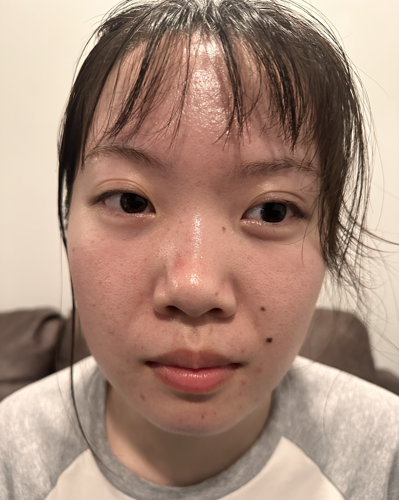
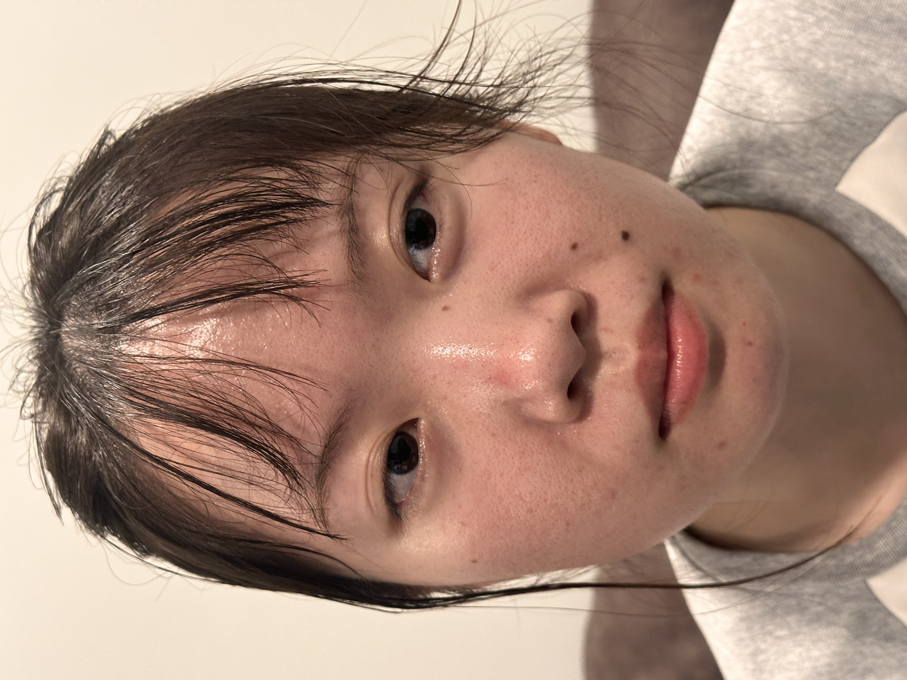
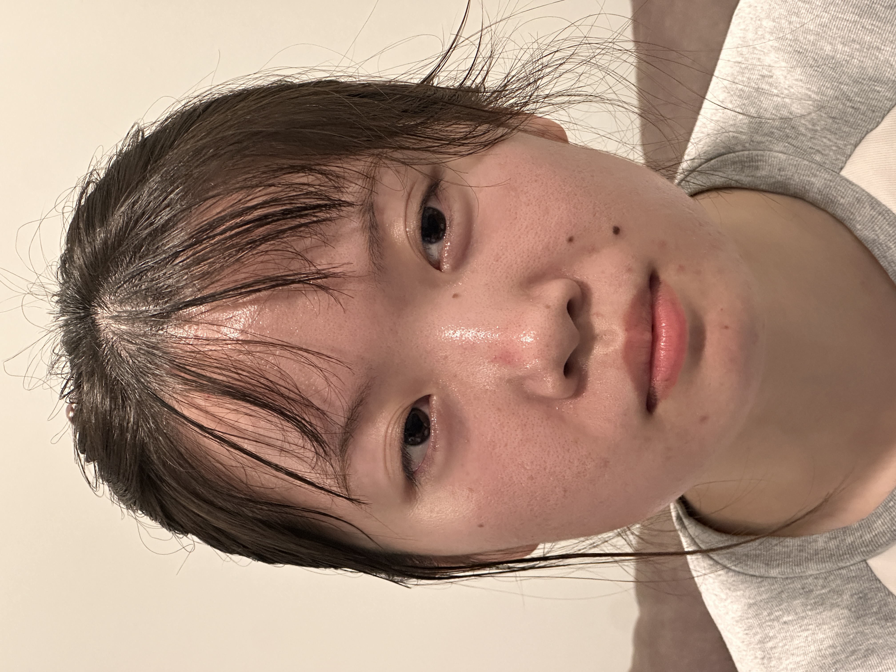
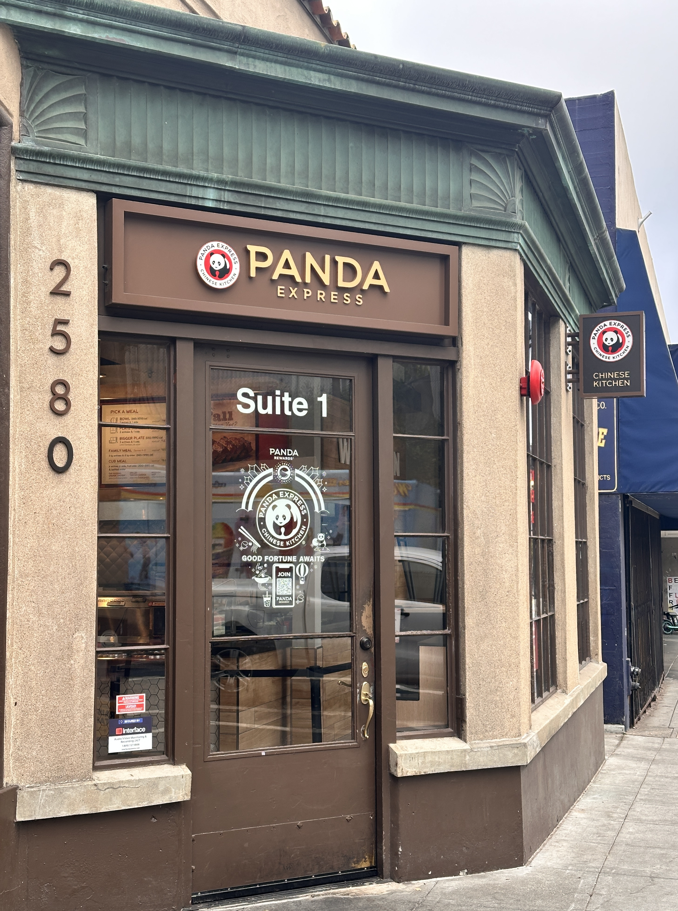
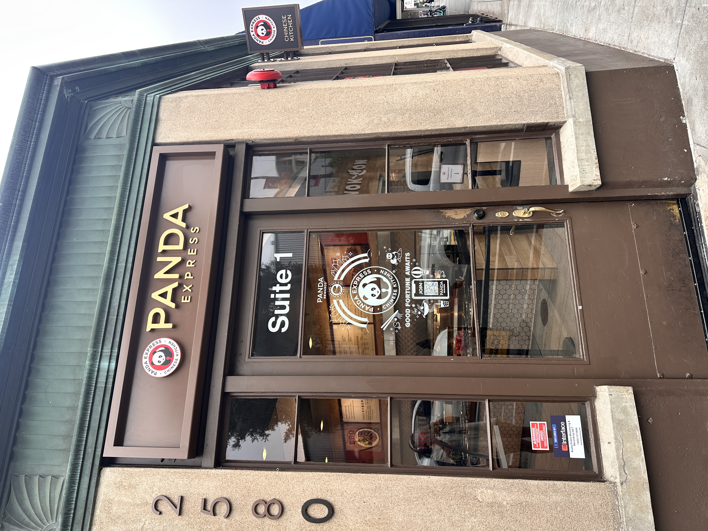
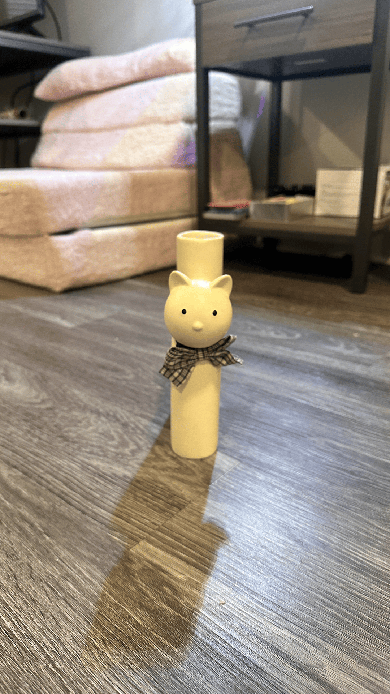

CS180: Intro to Computer Vision and Computational Photography · Project 0



Most notably, the nose looks flatter and wider, along with the rest of the face. The focal length affects how our face looks on camera. The human eye has a focal length of 17 to 22mm, so none of these photos are what my friend looks like to me in real life. How interesting! This is something to keep in mind when determining if a selfie looks like how other people see you. Did you get it at the right focal length?
The most beautiful building for a broke, hungry college student.


The camera captures the scene differently depending on the ratio between the distances of closer elements (subject) and the further elements (background). This ratio affects how much of the background is visible and how compressed the scene seems.
Camera moves back and the lens zooms in at the same time.

Notice how the shadow compresses and less of the background is included with a larger zoom in. More of the background gets included in the frame, while the cat flattens and widens.